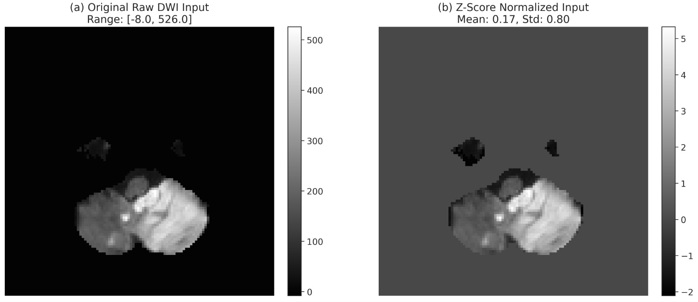

Macro Dice
0.0000
Macro Dice
0.0000
Micro F1
0.0000
Macro Recall
0.0000
Optimal Threshold
0.45
Accurate segmentation of ischemic stroke lesions from multi- modal MRI is a critical prerequisite for timely clinical decision-making, yet most state-of-the-art methods rely on heavy architectures and high- end GPUs that are impractical in low-resource clinical settings. This pa- per presents DSANet, a heterogeneous ensemble framework that couples three complementary 3D architectures, a densely connected network, a residual segmentation network, and an attention-gated U-Net—through a principled grid-search optimization pipeline. Rather than fusing model outputs with uniform or heuristic weights, we formulate ensemble con- struction as a constrained search problem over both fusion weights and the binarization threshold, with optimal values selected on the valida- tion set via a Dice-driven objective. The pipeline further incorporates test-time augmentation on axis-flipped variants and morphological post- processing to suppress small disconnected false positives. Multi-modal information from FLAIR, DWI, and ADC sequences is integrated into a unified 3D input representation, and training is kept resource-efficient through automatic mixed precision, gradient accumulation, and cosine- annealed AdamW. Experiments on the ISLES 2022 dataset under a fixed 70/15/15 split show that DSANet attains a macro Dice Similarity Co- efficient of 0.8780, a micro F1-score of 0.8780, and a recall of 0.9279, outperforming each constituent network and a DynUNet baseline by a clear margin. A fine-grained subgroup analysis confirms stable perfor- mance across lesion sizes (0.7306 on small infarcts and 0.8860 on large lesions) and anatomical regions (0.9541 in deep brain structures). These results demonstrate that carefully optimized heterogeneous ensembles offer a practical path to accurate stroke segmentation under constrained computational budgets.

High-level DSANet architecture illustrating standardized data flow from ISLES 2022 MRI inputs through modality preparation, heterogeneous model inference, and optimization-driven ensemble fusion.
| Component | Standard Form | Purpose |
|---|---|---|
| Dataset | ISLES 2022 (250 public cases) | Benchmark source for training, validation, and testing |
| Input Modalities | FLAIR, DWI, ADC | Complementary tissue and lesion contrast information |
| Spatial Standardization | Resampling to a common spacing | Reduces geometry inconsistency across subjects |
| Intensity Standardization | Min-max scaling + Z-score normalization | Stabilizes optimization and cross-case intensity alignment |
| Model Input Tensor | 3-channel 3D volume (FLAIR, DWI, ADC) | Unified representation for all three expert networks |
| Data Split | 70% train / 15% val / 15% test | Validation-driven weight and threshold optimization |
Final probability fusion is defined as:
$$P_{ens} = w_D P_{DERNet} + w_A P_{AttUNet} + w_S P_{SegResNet}$$ $$w_D=0.7,\; w_A=0.2,\; w_S=0.1$$
Inference applies TTA before thresholding:
$$\begin{aligned} P_{TTA}=\frac{1}{3}\Big(&P_{ens}(x) +Flip_x^{-1}(P_{ens}(Flip_x(x))) \\ &+Flip_y^{-1}(P_{ens}(Flip_y(x)))\Big) \end{aligned}$$ $$\hat{Y}=\mathbb{1}[P_{TTA} \geq \tau], \quad \tau=0.45$$
Connected components below 30 voxels are removed as post-processing.
Input: validation set V, test volume x, model probability maps P_D, P_A, P_S
Constraints: w_D + w_A + w_S = 1, w_i in [0,1]
Search: constrained grid-search over (w_D, w_A, w_S, tau)
1: bestScore <- -inf
2: for each feasible (w_D, w_A, w_S):
3: P_ens <- w_D*P_D + w_A*P_A + w_S*P_S
4: for each candidate threshold tau:
5: Y_hat <- 1[P_ens >= tau]
6: score <- ValidationMetric(Y_hat, V)
7: if score > bestScore:
8: (w_D*, w_A*, w_S*, tau*) <- (w_D, w_A, w_S, tau)
9: bestScore <- score
10: infer on x, Flip_x(x), and Flip_y(x)
11: restore orientation and average probability maps
12: Y_hat <- 1[P_TTA >= tau*]
13: remove connected components with size < 30 voxels
Multi-modal preprocessing, architecture-level specialization, and validation-optimized score-level fusion for final inference.
| Dataset Split | 70 / 15 / 15 |
|---|---|
| Patch Size | $64 \times 64 \times 64$ |
| Optimizer | AdamW + Cosine Annealing |
| AMP | Enabled |
| Threshold | 0.45 (validation optimized) |

DSANet demonstrates consistent lesion delineation quality with high recall and robust overlap metrics on ISLES 2022.
| Model | Best Validation Dice | Final Test Dice | Remarks |
|---|---|---|---|
| DERNet | 0.8215 | 0.8136 | Strongest individual contributor in final fusion |
| SegResNet | 0.7801 | 0.7819 | Improves robustness across varied appearances |
| Attention U-Net | 0.7789 | 0.7274 | Attention-guided complementary representation |
| DSANet Ensemble | - | 0.8780 | Grid-search optimized weighted fusion |
| Category | Sub-group / Region | Dice |
|---|---|---|
| Lesion Size | Small Lesions (<10 ml) | 0.7306 |
| Lesion Size | Large Lesions (>10 ml) | 0.8860 |
| Anatomical Location | Deep Brain Structures | 0.9541 |
| Anatomical Location | Superficial Brain Regions | 0.8037 |
| Spatial Consistency | Lesion Core | 0.9909 |
| Spatial Consistency | Lesion Boundary | 0.8350 |

This figure presents the complete DSANet architecture: multi-modal MRI preprocessing, parallel probability estimation from DERNet, SegResNet, and Attention U-Net, and validation-optimized weighted fusion. The optimized configuration shown in the paper ($w_1\approx0.7$, $w_2\approx0.1$, $w_3\approx0.2$) is followed by thresholding at $\tau=0.45$ to produce final binary lesion masks.

The left panel shows original raw DWI intensity distribution, while the right panel shows z-score normalized input used in training. This normalization step stabilizes intensity scale across subjects and improves optimization consistency for downstream ensemble learning.

Qualitative slices across below-center-above planes (z-3, z, z+3) and center-modal views demonstrate stable lesion localization and contour continuity. The red boundary overlay highlights how DSANet preserves lesion shape across DWI, ADC, and FLAIR contexts.

High true-positive concentration supports strong voxel-level overlap. Remaining errors are concentrated near hard boundary regions.

Boundary regions remain the most challenging, but fusion + TTA improve continuity and suppress isolated false positives.


@article{DSANet2026,
author = {Anonymized Authors},
title = {DSANet: A Grid-Search Optimized Heterogeneous Ensemble for Ischemic Stroke Lesion Segmentation in Low-Resource Settings},
journal = {Under Review},
year = {2026}
}